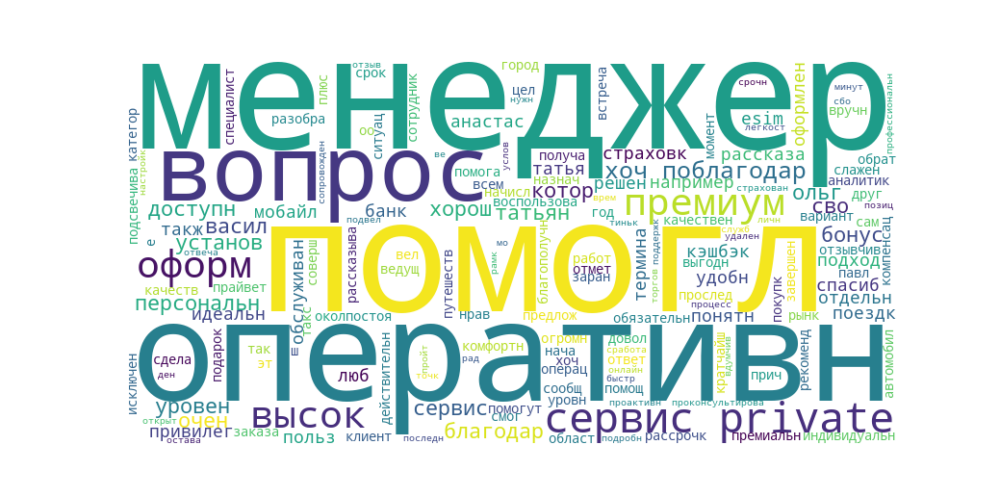
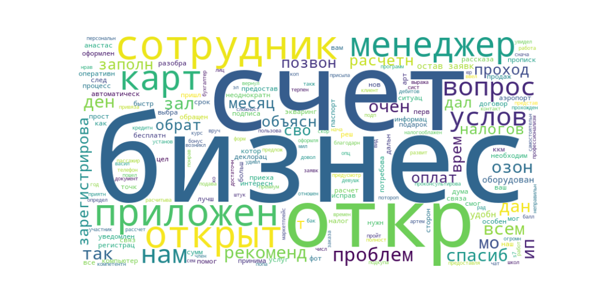
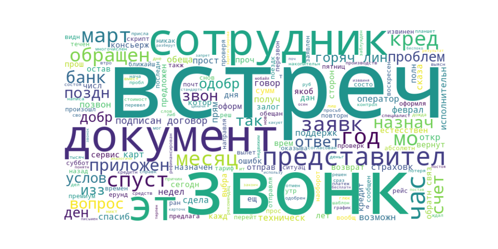
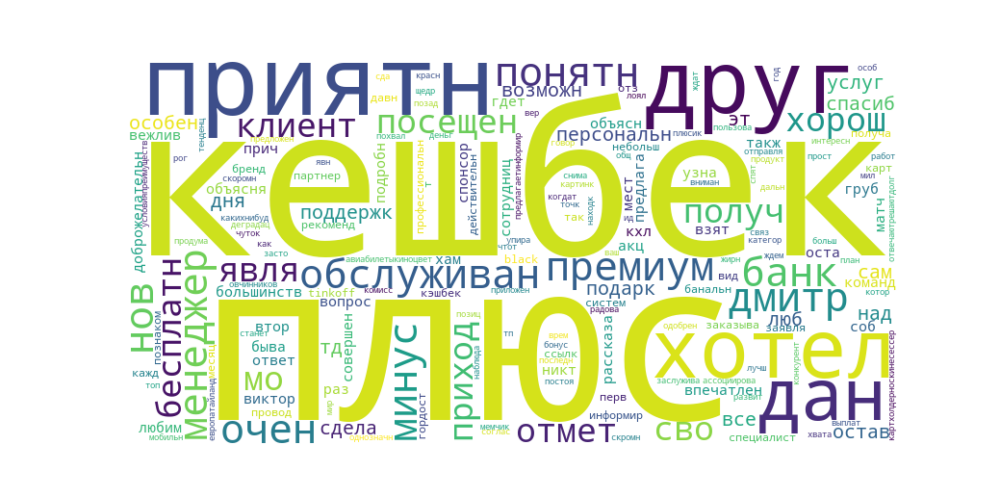
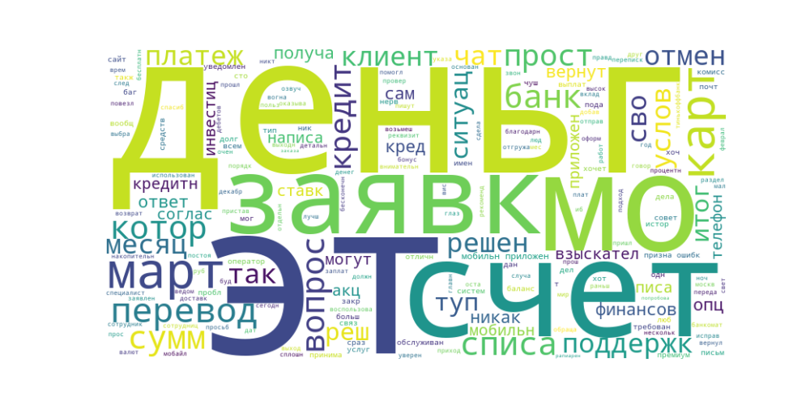
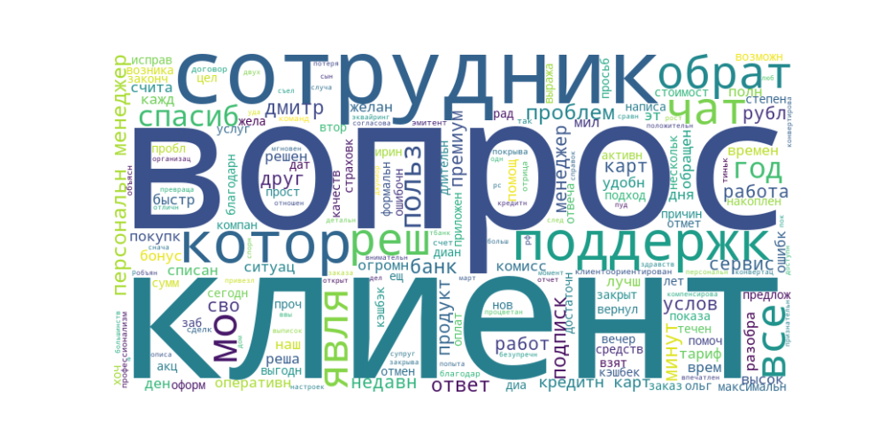
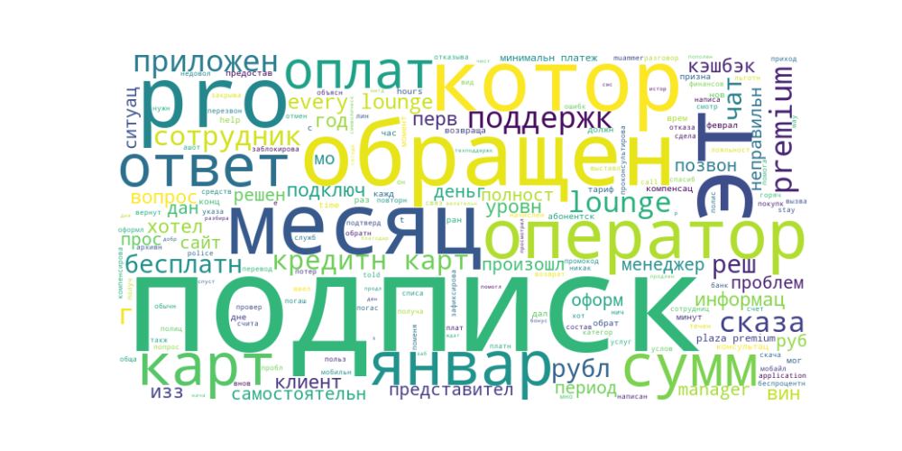
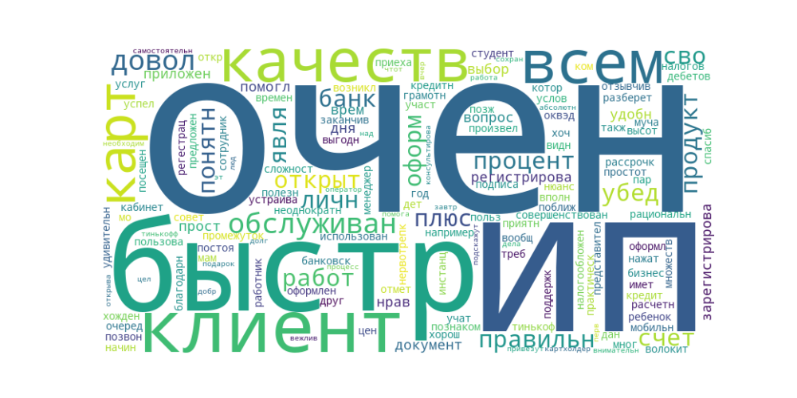
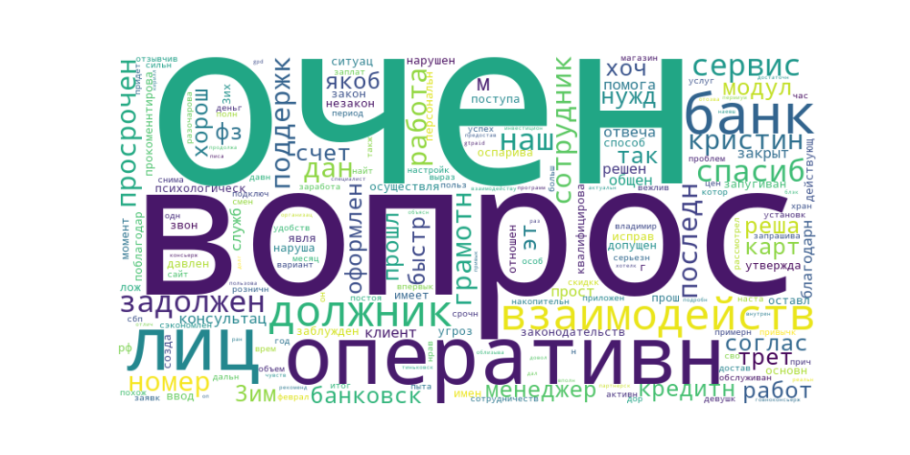

1. Предобработка текста (приведение к нижнему регистру, удаление пунктуации, токенизация, стемминг)
2. Векторизация текста с использованием TF-IDF (Term Frequency-Inverse Document Frequency)
3. Кластеризация методом KMeans
Пользуюсь сервисом Private. Обслуживание удобное, комфортное, всегда оперативно и понятно получаю ответы на все свои вопросы. Хочу поблагодарить своих персональных менеджеров Татьяну А. И Василия С. За высокий уровень сервиса. Например, Татьяна подсвечивает о привилегиях и бонусах, которые мне доступны по сервису Private. Сообщила про бонусы в Тинькофф Мобайл. Помогла мне оформить страховку для путешествий. Рассказала и помогла установить мне премиальное такси, чтобы я смог воспользоваться поездками с очень хорошей компенсацией по сервису Private, причем можно заказать любую поездку по городу и области. Очень доволен и рекомендую.
Пользуюсь сервисом Private уже около года. До этого был премиум. Также есть премиум в других банках. Премиум тинькофф мне нравился, а прайвет также хорош как премиум, только во всем лучше (плюс это действительно индивидуальный подход к клиенту) Все всегда оперативно, доступно и понятно. Отдельно хочу поблагодарить своих персональных менеджеров Татьяну А. И Василия С. За высокий уровень сервиса. К ним всегда можно обратиться с любым вопросом и они обязательно помогут. Например, Татьяна оперативно помогла разобраться с покупкой в рассрочку, сама проследила и предложила варианты, что для меня было бы удобнее и выгоднее. Рассказывает о привилегиях и бонусах, которые мне доступны по сервису Private. Василий постоянно помогает с аналитикой по рынку.
Хочу поблагодарить моего менеджера Татьяну А. За высокий уровень сервиса и оперативность. Она помогла мне за 5 минут оформить esim от Тинькофф Мобайл. Менеджер подробно рассказала об условиях и помогла с легкостью пройти весь процесс оформления и настройки esim удалённо.
Благодарю Ольгу Е. , Персонального менеджера, за отзывчивость и помощь в решении вопросов. Помогла с кэшбэком по операции, когда она уже была совершена, а категорию кэшбэка заранее я не назначила. Ольга в качестве исключения сделала подарок — начислила вручную. В ситуации со страховкой автомобиля оперативно проконсультировала и помогла оформить. Отзывы о Тинькоф страховании хорошие. Ольга всегда вдумчиво подходит к вопросам. И проактивная позиция очень радует. Так же благодарю он-лайн Службу поддержки Тинькофф. Всегда быстро и профессионально отвечают!
Хочу поблагодарить личного менеджера Анастасию за оперативное решение вопросов в рамках обслуживания банком Тиньков. Из последнего: нужно было срочно установить терминал в торговую точку, до открытия которой оставался 1 день. Благодаря сопровождению Анастасии установили терминал во время, все сработало без сбоев, не подвели 🔥 Спасибо!
Идеальная и слаженая работа сотрудников банка в целом. Отдельно хочу отметить ведущего менеджера Ш. Павла. Вел меня с момента начала оформления ООО до его благополучного завершения. Такого высокого уровня специалиста я еще не встречал. Все идеально качественно оформил в кратчайшие сроки. Спасибо ему огромное.
Оставил заявку на регистрацию ИП. Банк предоставил всю необходимую информацию для того чтобы я мог самостоятельно определится с формой юр лица, видом налогооблажения. Также у банка есть школа бизнеса где бесплатно можно пройти курсы по открытию и развитию бизнеса. Через день после оформления заявки ко мне приехал сотрудник банка, зарегистрировал мне эл подпись, подписали необходимые документы, мне на телефон установили приложение Тинькофф бизнес и вручили карту для бизнеса привязанную к расчетному счету. Через день мне пришло уведомление от налоговой о том что ип было зарегистрировано, автоматически открылся счет для бизнеса. В приложении Тинькофф бизнес много интересных опций и бонусов, в том числе бухгалтерия которая автоматически расчитывает налог и сроки оплаты, присылает уведомление. В день открытия счета мне позвонила девушка и представилась моим персональным менеджером, объяснила как пользоваться приложением, дала свои контакты, проконсультировала по вопросам оплаты по бизнес картам. В целом мне очень нравится и сам Тинькофф банк и в особенности услуги предоставляемые им бизнесу, всем кто думает открыть бизнес или уже открыл его рекомендую
Потребовалось выбрать бизнес зал в аэропорту Баку. В приложении увидел 5 (!) Штук. Сначала выбрал не тот бизнес зал. Далее пошёл оформлять другой проход. Поторопился и неправильно заполнил данные пассажира. Обратился в чат. Мне быстро вернули два прохода. Я доволён на 10 баллов из 10. Большое спасибо менеджеру Василию:)
Обратился к менеджеру Анастасии С. По вопросу прохождения в бизнес зал аэропорта для участников программы Тинькофф Премиум. Анастасия все рассказала и объяснила и даже предложила бесплатный проход для членов семьи в бизнес зал, что не было предусмотрено договором. Такое отношение к клиентам очень подкупает. Был приятно удивлен
Потребовался интернет-эквайринг для продаж через социальные сети. Оставил заявку на сайте Тинькофф, т. К. Уже был открыт расчетный счет. В течение дня со мной связался менеджер от банка. Объяснил основы: что такое эквайринг и чем он отличается от онлайн-классы. Менеджер был всегда на связи и делился ценными советами по ведению бизнеса. Спасибо Владимиру Н!
Для начала дали кредитную карту S7, мне понравилось копить мили. В скором времени заказал дебитовую карту, и открыл бизнес счёт.
Нужно было срочно открыть счет и произвести довольно непростые интеграции. Спасибо сотрудникам банка, я просто в шоке от того, насколько внимательны, приветливы и целеустремленны сотрудники. Всё рассказали, всё проверили, исправили проблемы. Я думала, что после Точки меня удивить качественным обслуживанием невозможно. Спасибо за ваш труд и вашу помощь. С удовольствием рекомендую Тинькофф Бизнес
Началось с того, что оставили заявку на получение кредита под залог недвижимости на сумму 4 000 000 руб. Сумму, которую одобрил банк составила только 1 600 000 при кадастровой стоимости квартиры в 9 000 000 руб. Ладно, мы согласились и на это. 5 Февраля 2024 был одобрен кредит. Первая встреча с представителем для подписания договора была назначена на 10 февраля с 10 до 12 часов. Так как сделка сложная с залогом, мы втроем ждали представителя 10 числа. Сообщений и звонков от банка мы не получали. В 10.30 Позвонил в банк, меня уверили, что встреча состоится, необходимо дождаться звонка от представителя. В 11.30 Еще раз набрал на горячую линию, ответ был тем же: ждите звонка представителя. Только лишь в 13.30 По техническим причинам встреча была отменена (возможно вспышки на солнце, северное сияние или вторжение инопланетных сил помешали банку осуществить назначенную встречу, нам не объяснили). После ежедневных созвонов с банком следующая встреча с представителем для подписания договора была назначена на 22.02.2024 (С 10.02 По 21.02 Количество звонков на горячую линию с моей стороны было от 3х до 5и в день с заверениями от сотрудников, что вопрос поставлен на контроль и будет решен в ближайшее время). Мы также собрались для подписания договора, НО после звонка представителю выяснилось, что встреча не может состояться, так как она не прогрузилась у него на планшете. Далее выяснилось, что, якобы мои документы не прошли проверку (то есть, до 27.02 Сотрудники банка не проверяли мои документы либо просто «по-братски» назначали встречи для подписания договора). Очередная встреча была назначена на 04.03. И, как можно догадаться, она тоже не состоялась потому, что у представителя опять не открылась встреча на планшете. После многочисленных звонков на горячую линию встреча была переназначена на более позднее время. НО, у вновь назначенного представителя такая же проблема, она не может открыть встречу. На горячей линии в банке регулярно извиняются и ставят на контроль мои многочисленные обращения, но воз и ныне там. Кроме того, для подписания договора мы втроем бросаем все свои дела, отпрашиваемся с работы и ничего не происходит, а от сотрудников банка слышим лишь слова сожаления и обещания скорейшего решения нашей проблемы. Сегодня 4 марта прошёл ровно месяц с попытки получить кредит под залог недвижимости превышающей в четыре раза сумму кредита
Всем доброго дня, возможно мой отзыв кому-нибудь поможет). Еще до нового года позвонил оператор, с предложением одобренного рефинансирования, которое со слов оформляется в рару кликов. После нового года попытался воспользоваться данным предложением. Заявка почему-то ушла на рассмотрение. Спустя 2 — 2,5 недели (вместо заявленных пары дней) заявка была одобрена, назначил встречу с курьером. Встреча чудесным образом была отменена (в поддержке пояснили, что документы на кредит не успели подготовить). Уведомление в приложении — дадим обратную связь не позднее 8.02. С обратной связью припозднились, но к счастью не настолько, как ранее. Ответили 9.02. Сообщили о том, что по техническим причинам непреодолимого характера в кредите отказываем. То ли дело в некомпетентных андеррайтерах, которые месяцами рассматривают заявки и случайно отжимают кнопку «одобрить», то ли в поддержке и операторах, вводящих в заблуждение — остается только гадать. Зато с открытием брокерского счета проблем не возникло со стороны банка. Открыли без моего участия и завалили звонками с рекомендациями инвестиций (но операторы утверждают, что это не является рекомендацией). На вопрос — как получилось так, что счет сам собой открылся — вы наверное перешли по ссылке «получить подарок». Видимо тоже технические проблемы. Либо наоборот — полное отсутствие технических проблем наоткрывать счетов. В общем и целом — впечатдение о банке испорчено, 1 звезда за невозможность отметить меньший балл, ну и за дизайн дебетовки (КиШ — огонь) . Спасибо за внимание)
Оформил карточку Тинькофф еще лет 8-10 лет назад. Последние 1,5 года постоянно звонили и предлагали какую-то ерунду: перейти на премиум, перейти на тариф тинькофф мобайл и прочее, говоря, что это будет для меня абсолютно бесплатно. Каждый раз просил, чтобы мне НЕ ЗВОНИЛИ, не беспокоили, поставили запрет на звонки, все, ВООБЩЕ ВСЕ с такими или аналогичными предложениями. Терпение закончилось осенью — оформил письменное обращение, как результат — извинения, обещания что разберутся почему так произошло. Спустя месяц — такой же звонок, оформляю повторное обращение с понятным вопроси. Обращение зарегистрировали, оформили как вопросы по приложениям и прочим, спустя 2 недели — повторная, спустя месяц и прочее, каждый раз представители банка цинично изввинялись, используя стандартные скрипты, не читая предыдущие обращения. Звонки поступали с такой же периодичностью. Месяц назад решил, что если перейду на тариф премиум, то Банк станет внимательнее и больше такого не повториться — наоборот стали звонить и предлагать каждые 2 дня. Скрипт общения сотрудников такой же. Естесствено, пообщели провести еще одну проверку и предоставить мне подробный отчет, ими же установленный дедлайн — 10 марта. (Сегодня 18 марта.) Дополнительно! Вишенка на торте текущая ситуация: через консьерж сервис выбрал и оплатил поездку (в пятницу 15 марта). С вылетом на 19 число в 7 часов утра. Встреча назначена на 16 часов по местному времени, т. К. Другой человек улетает 20 числа в 3 часа ночи, т. Е. Спустя 8 часов после назначенного времени. Документы консьерж снача обещал мне отправить в пятницу, потом обещал в субботу до 10 часов утра, в субботу пообещал отправить до 16 часов, потом в воскресенье не позднее 10. Естесственно ничего мне отправленно не было, мои сообщения не были доставлены, не былипрочитаны. В 16 часов в воскресенье дозваниваюсь в сервис, после чего мне отправляют документы на почту. Сейчас проверяю все документы и оказывается, что билеты забронировали вылет на 15 часов. Снова сервис в приложении не работает, снова звоню консьержам. Обещают перезвонить в течение часа. Угадайте кто не позвонил? Сотрудники сервисаа перезвонили позднее, сказали, что отправляли рейсы (в переписке видно, что ранее я отмечал, что ничего не видно). Оказывается сотрудник отправил другой рейс, меня не предупредив, что это другое время. Естесственно ничего с этим не сделали, встреча не состоится. Возможность личной встречи в ближайшие 2 года — нулевая. Извинения сотрудников — просто ерунда. Невероятно расстроен. Смысл поездки чуть выше нуля. Естесственно консерж говорит, что уже сделать ничего нельзя.
29.02 Я оставил заявку на рефинансирование кредитной карты. Банк ее одобрил и прислал в смс. Со мной связался специалист для согласования условий — я задал вопрос могу ли самостоятельно выбрать их в приложении? На что получил положительный ответ, но вот проблема при входе в раздел «выберите условия» — выдает ошибку с номером горячей линии. 6 Дней я ждал звонка для согласования условий. По одобренной заявке. Оставил 12 обращений и сделал добрый десяток звонков. Абсолютно некомпентное поведение сотрудников банка это настоящий цирк. Отписываются шаблонами и прямо говорят на ситуацию повлиять не можем. О чудо! На 7й день сегодня я дождался звонка кредитного специалиста — согласовал условия, выбрал период кредитования и комфортный платеж. Сотрудник сверил мою почту и сказал ожидать на нее в течении 10 минут документов по кредиту. Но, ничего не произошло и спустя 5 часов в ЛК все та же информация, никаких документов не пришло и заявка в том же статусе. А банк продолжает откидываться шаблонами.
Добрый день, хотел взять кредит, условия неплохие, но вот отношение ужасное, взял кредит на авто 500000, 29 февраля 2024 года, мало того что встреча только была назначена только на 11 марта это почти 2 недели, так ещё оказываеться я не могу им воспользоватьмя, так как надо было перевыпустить карту и чтоб её тоже доставили, но про это никто ничего не сказал. Как будто никто не знал. А чтоб брали продукт сразу говорят. Так карту привезут только 28 марта это ещё больше 2-х недель. Прям передовой банк. Пластик везут прям из китая.
В марте, мае, августе 2023 года в Адрес Тинькофф Банк направлялись исполнительные документы для произведения удержаний по ним. На протяжении всего 2023 года, и Января, Февраля 2024 года, направлялись заявления об из отзыве. По состоянию на 12.03.2024 Никакого ответа не посупало. Исполнительные документы не возвращались. Всего было направлено около 400 документов- ни один не вернулся. Связывались с представителем Банка, Сергей Я. Обещал дать обратную связь, но также ничего не ответил спустя месяц. Такое впечатление, что сотрудники Тинькофф просто игнорируют не интересные для себя запросы. Срок возврата исполнительного документа регламентирован ФЗ «Об исполнительном производстве» и составляет «не позднее дня следующего за днем окончания производства». Прошу срочно разобраться в данной проблеме.
Тинькофф Банк является спонсором и банком КХЛ. И клиентам Тинькофф Премиум предлагает посещение матчей любимой команды совершенно бесплатно, причём можно с собой взять друга. Об этой приятной акции я узнал от моего персонального менеджера Дмитрия О. (6867601). Также всегда информирует о новых услугах банка. Очень приятно, что обслуживание в Тинькофф проводят профессиональные специалисты, такие как Дмитрий.
Карта Tinkoff Black действительно хорошая, каждый месяц получаю кэшбек, хоть и небольшой, но приятно) +у меня бесплатное обслуживание, т. К. Заказывал через ссылку своего друга. Рекомендую
Давно хотел оставить отзыв. Сделаю банально в виде плюсов и минусов. Плюсы: + Бренд — всегда с гордостью заявляю, что являюсь клиентом данного банка; Кешбек — банк первым меня познакомил с данной системой. Очень много партнеров, на авиабилеты/кино/цветы, «кешбек дня» это просто находка. Банк лоялен, в плане одобрения выплат кешбека, рогами особо не упираются); Мобильное приложение — тут и так всё понятно. Все понятно, продумано и тд; Поддержка — отвечают/решают/долго ждать не приходится, любят отправлять мемчики или милые картинки); Премиум — согласен, не самый «щедрый», но плюс заслуживает. Особенно, хотел бы отметить персонального менеджера Овчинникова Дмитрия. Всегда на связи, постоянно предлагает/информирует о каких-нибудь новых продуктах, как сделать лучше и тд и тп. В общем здесь «жирный» плюс, однозначно. Подарки — скоромный плюсик, но картхолдер/носки/несессер всегда приятно получить. Хотелось бы больше подарков) И тот плюс, который радовал, когда-то: это конечно, возможность, снимать деньги в любой точке мира, без комиссии. Да, было время, Европа/Тайланд. Надеюсь, еще будет возможность. А теперь, чуток минусов, из того что похвалил: Категории кешбека и «кешбек дня» — наблюдается тенденция деградации или застоя, что ли. Конкуренты не спят, особенно один «красный». Тинькофф всегда ассоциировался у меня топ по Кешбеку, но что-то в последний год, сдаем позиции. Верим, ждём новых идей и предложений; «Премиум» — уже говорилось, не самый лучший. Явно, не хватает, какого то бонуса. В других банках, более интересные условия/преимущества. На этом всё, Спасибо Большое Тинькофф Банку, моему менеджеру и поддержке за их работу. Дальнейшего Вам развития. Очень приятно пользоваться вашими услугами. Надеюсь, эти скромные «минусы» мы оставим позади. А «плюсов» станет еще больше. Спасибо за внимание.
Остались только хорошие впечатления от посещения данного банка. Никто не хамил и не грубил, как сейчас бывает в большинстве других мест обслуживания. Так же хотелось бы отметить сотрудницу Викторию. Доброжелательна, вежлива, все подробно рассказала и объяснила, где-то даже приходилось объяснять по второму разу. На все свои вопросы получил понятные ответы.
29 февраля ночью с моего баланса мобильного телефона списалось 100рублей, при том, что там был нулевой баланс. Т. Е. Баланс моего телефона стал отрицательным. Списали деньги, которых у меня НЕТ! ЭТО КАК? Оказалось, что мобильный оператор Тинькофф банк вогнал меня в долг перед Тинькофф Мобайл на основании что это одно предприятие. А именно, дело в том, что я просрочил ежемесячный платеж по кредиту в Тинькофф Банке, на основании этого они решили списать с моего мобильного счета 100р в счет погашения просроченного платежа. Только вот как? Как можно списать деньги, которых нет? Получается, что мне оборвали связь мобильную, чтобы загнать в угол и заставить заплатить хоть сто рублей, вогнав меня в долг перед Тинькофф Мобайл. Оператор в чате объяснил это тем, что оплата по кредиту превыше всего. Получается если у меня будут где-то хоть 5 руб. На каком-нибудь счету, или карте или вообще где-либо, где у Тинькофф есть с этим связь, они без спроса могут с МОИМИ деньгами делать всё что захотят. И как после такого самоуправства можно оставаться клиентом такого банка? Ответ: НИКАК. Закрою зарплатную карту, заблокирую все счета, перейду на другого оператора. Распоряжаться моими деньгами как захочет Тинькофф — извините, это мне не нужно. И НИКОМУ НЕ Советую переходить на эту связь или банк.
Раньше это был супер банк все было хорошо и круто, но сейчас это дно полное! Раньше это было лучшее приложение сейчас это один сплошной баг что инвестиции что желтое, любой внешпромторг банк лучше! Кредит не возьмешь заявки уходят в анабиоз на месяцы отменить не могут просят идти на почту и писать им письмо в москву тратя деньги время и нервы! Тупит все проще сказать что не тупит ( С инвестиций я уже ушел там баг на баге потерял 400 000тр изза них! Подаешь заявку на долоровый счет появляется дебетовка принимаем решение) и не отменить и не воспользоваться счетом в иностраной валюте) пишешь в подержку пишут направьте нам письмо на почту) Попытаюсь написать 10% того что тупит ибо все описывать надо часа 3 -4 1 Система сама удаляет адрес прописки передает беометрию без согласия менят зп даные о работе даные о зарплате. 2 Кредит не возьмешь сплошной тупняяк с заявками и отменить их можно только отправив письмо в москву и через месяц отменят) 3 Счета в иносраной валюте не открыть тупняк принимаем решение и опять омена только почтой рф 4 У них есть раздел фин зоровье там типо кр историю можно заказть чушь не отгружается ничего все тупит ( 5 Инвест копилку не откроешь пищет что она уже есть хотя ее нет 6 Кредитную историю не правельно отгружают, висят кредиты как активные которые закрыты месяц назад+ платежи не отгружены типо ты и не платил) 7 Фото профиля в инвестициях так и не исправили ситуацию не отображается и все 8 Аналитика в инвестициях показывает чушь путая инвестора в налоговом отчете тоже чушь будьте внимательны следите за этим там и могут деньги пропасть, или на оборот как у меня добавили к доходности +7300 000 млн и 10 сотрудников не смогли ниче понять только 11 удалось обьяснить и и справили, но доверия банку уже нет 9 Кубышка давно азкрыта, но в кредитной истории светится как открыта 10 В приложение бывает не войдешь или просто выкидует с него 11 Иногда нельзя добавить карту в мир пей и стоишь на касе люди ждут очереди, а ты в банк звнишь) 12 Было забанели 115ф, но потом признали ошибку когда все нервы выматали что у меня глаз дергался и признали ошибку и выплатили вшивый бонус в ращмере 8тр им очень повезло что онименя разбанели ибо я хотел залить клеем приемники денег в банкомате окуратно снимая деньги и линув туда пару тюбиков это выход из строя банкомата и не малые последствия и сотни тыс потер для банка! Просто им повезло что попался специалист который детально все проверила и признала ошибкой блок по 115 фз, а так банят всех без разбора у них стоит система разработаная имбицилами в очках и они думают она умная) 13 Система сама меяет бонусы за приглашеных друзей не выплачивают ничего не приглашайте никого вам всеровно не выплатят!
20 февраля написал просто в чат какая процентная ставка на автокредии, мне ответили рассказали. Я им ответил что очень высокие процентные ставки и не буду подавать заявку. Сегодня 22.02 И зашел в мобильное приложение Тинькофф, а там у меня висит заявка на рассмотрение на сумму которую я даже не писал им что бы они расчитали. Сумма в два разв больше. Написал в чат что это такое? На что мне ответили что якобы я их просил рассчитать и они подали заявку! Люди уважайте себя не прогибайтесь перед этими мошенниками и жуликами! Все скрины сохранил. Буду обращаться в прокуратуру. Без моего ведома и согласия на меня кредит хотят оформить!
Хочу оставить отзыв с благодарностью Н. Сабине. Были списаны деньги за оповещения, хотя услуга отключена. Сотрудник банка помогла составить заявку на возврат денежных средств, и детально проконсультировала по вопросам обслуживания. Деньги пока не вернули, но это вопрос времени.
Отличный банк для любых финансовых нужд! Я уже долгие годы являюсь клиентом Тинькофф банка и хочу поделиться своим положительным опытом использования их услуг. Во-первых, мне нравится удобство и простота в использовании мобильного приложения банка. Я могу легко отслеживать свои финансовые операции, оплачивать счета, переводить деньги и многое другое, не выходя из дома. Клиентоориентированный подход Тинькофф банка также заслуживает отдельного упоминания. В случае возникновения вопросов или проблем с моим счетом, я всегда могу быстро получить помощь через телефонную поддержку или онлайн-чат. В общем, я остаюсь довольным клиентом Тинькофф банка и с уверенностью могу рекомендовать его всем, кто ищет простое, выгодное и качественное банковское обслуживание!
26.01.2024Г. Оформил заявку на кредит в Тинькофф Банке. Решение никакое не принимают, заявка просто болтается в мобильном приложении и на сайте. Через поддержку попросил удалить заявку, так как уже не нуждаюсь в кредите этого банка. В ответ получаю постоянные отписки от поддержки, типа, подождите еще чуть-чуть. Постоянно сдвигают даты решения проблемы. Никому не советую обращаться за кредитом в Тинькофф Банк.
Хочу поделиться опытом общения с персональным менеджером с подпиской Тинькофф премиум. Я уже более 10 лет являюсь клиентом банка Тинькофф и нет ничего более приятного, чем наблюдать как банк улучшается с каждым новым годом. С недавнего времени я оформил подписку тинькофф премиум. После оформления, за каждым клиентом закрепляется персональный менеджер, который в приоритетном порядке решает все возникающие проблемы. Так и случилось сегодня. Первая проблема произошла когда банк ошибочно не начислил повышенный кэшбэк за покупку, а вторая проблема когда 01.03.2024 Года я увидел, что мой период бесплатного обслуживания по непонятной причине закончился. Я написал менеджеру Дмитрию О. (Персональный № 6867601) с просьбой помочь разобраться. Какое же было у меня удивление, когда уже через 10 минут было сформировано обращение в техническую поддержку для проверки, и еще через 10 минут проблема была решена в мою пользу. Не перестаю удивляться клиентоориентированности банка и профессионализме сотрудников! Огромное спасибо Дмитрию за помощь и всей команде банка за такую четкую работу!
Благодарю персонального менеджера Дмитрия О. 6867601 И команду Тинькофф за высокую степень клиентоориентированности и помощь в решении вопросов. Обратился в чат к персональному менеджеру 02.02.2024. Обращение выпало на выходной день. Дмитрий ответил в понедельник в 11.02 С предложением немного подождать до решения вопроса. В 11.39 Мой вопрос по кредитному продукту был решён. В чате всегда оперативно отвечают и помогают, часто обращаюсь именно в чат. Являюсь клиентом Премиум, активно пользуюсь всеми предлагаемыми продуктами, радуют высокие ставки по накопительному счёту и вкладам, отзывчивость, оперативность сотрудников банка и их желание помочь. Благодарю.
Готов отметить, что являюсь активным клиентом банка с января 21-го года. У меня есть дебетовая карта, кредитная карта и потребительский кредит. За все время нашего сотрудничества сам банк и его сотрудники показали себя наилучшим образом. Всякие вопросы и проблемы, которые возникали у меня на протяжении всего времени, решили в кратчайшие сроки и максимально быстро, зачастую в мою пользу) Причем клиентоориентированный подход чувствуется даже в мелочах — например, недавно я решил временно отказаться от подписки Tinkoff Pro и забыл, что у меня включена услуга SMS-оповещение, которая без подписки является платной. Заметил это я только через несколько дней, но этого было достаточно, чтобы списать денежные средства для услугу. Я обратился в Поддержку, где сотрудники выслушали мою проблему и в целях сохранения лояльных взаимоотношений — они отменили это списание. Помимо этого, недавно я забыл взять чек при оплате товара, который участвует в их акции «Кэшбек дня». Я обратился в чат Поддержки, чтобы узнать возможные способы другой верификации покупки. Мне было достаточно просто предоставить скрин из моб. Приложения магазина с датой совершения покупки и позициями, чтобы Банк мне выплатил полную стоимость кэшбека. Считаю, что такой подход порождает высокую степень доверия к Банку и стремление пользоваться их продуктами, которые и без того довольно выгодные, чаще, чем продуктами других Банков.
Отличный сервис на тарифе Премиум. Сегодня 28.03 Обратился в поддержку по вопросу списания комиссии за тариф за март. Сотрудник Ольга Е. Максимально детально описала все условия, показала причины и в качестве бонуса компенсировала стоимость подписки. Спасибо, Ольга! Ну и в целом только положительные впечатления от банка — заказал карту Джуниор сыну и вторую карту супруге — привезли домой на следующий день в удобное время вечером, 5 минут все формальности.
Обратился в свой банк по страховке, потому что собираюсь отдохнуть на яхте. Всё объяснили, на все вопросы ответили, даже на те, которые я по несколько раз задавал, с просьбой объяснить подробнее. Ещё и тариф для телефона подсказали, который намного выгоднее моего и позволит хорошо экономить. Отдельное спасибо менеджеру компании О. Дмитрию (6867601)
Здравствуйте! Пока радует банк. Хочу отметить чат в котором мгновенно отвечают и решают различные вопросы. Возникла проблема с кэшбэком. Сумма за заказ в Сбермаркете списалалась, а потом бонус отменился, т. К. Акция закончилась. Написала в чате и сотрудник всё исправила. После повторного списания средств за заказ, бонус вернулся, что не может радовать. Недавно ещё оформила у этого банка страховку по ипотеки. Меня удивило длительность процедуры, очень всё быстро и по цене дешевле вышло, чем у других компаний.
По федеральным каналам крутили рекламу «акция! Приведи друга и получи 1500, а твой друг получит дебетовую карту с полностью бесплатным обслуживанием навсегда! „ Меня попросила моя знакомая поучаствовать в этой акции. Я зарегестрировалась по её специальной персональной ссылке. Акция прошла, потому что за меня ей заплатили 1500 как и обещали. И вот совершенно случайно я узнаю, что у меня списываются деньги! Звоним в Тинькофф, рассказываем ситуацию. И оператор отвечает „вам что-то не так объяснили. Карта платная“ Это как вообще? Пришлось её заблокировать! А та моя знакомая, которая привела меня говорит „ни у меня, ни у моих знакомых никогда такого не было! Всё полностью у нас бесплатно! „ Так причём изначально, когда мне представитель привёз эту карту (дебетовую естественно), то он зачем-то как подарок дал мне кредитную! И активировал её! Я отказывалась, но он очень настойчивый! Пришлось снова звонить в Тинькофф и разбираться, блокировать кредитку. Так сотрудники Тинькофф долго передо мной изменялись, что вообще он мне дал ещё какую-то карту, потому что этого тоже не должно было быть! Это просто кошмар какой-то, че происходит!

Я месяц звонила в банк, более 5-ти раз точно! Уточняла, есть ли возможность получить дебетовую карту Тинькофф Блэк с платёжной системой Мастеркард. Меня убедили, что такие карты ещё есть в наличии и для её получения я должна для начала получить карту с смстемой Мир. Несколько раз откладывала заказ карты, сомневалась. Но меня всё же убедили, что мастеркард с бесплатным обслуживанием мне помогут оформить, после получения карты Мир. Итог: карту я заказала, получила Мир. А теперь мне отказывают в выдачи карты Мастеркард, ссылаясь на то, что её можно получить только с подпиской премиум. Потрачено много времени на переговоры, но результат — ввод клиента в заблуждение, лишь бы выдать хоть какую-то карту. Считаю, действия банка недобросоветными, операторы дают ложную информацию.
Оформляла эту карту по ссылке от друга, мне — бесплатное обслуживание при выполнении условий, а вот другу бонусы не пришли после выполнения. Он написал в чат и только после проверки, ему зачислили бонусы. Удобно, что доставили на дом и счёт я сразу же увидела в мобильном приложении. Достаточно удобная карта с выбором кэшбэка, условия для зачисления простые. Кэшбэк сразу же поступает на карту в рублях.
4.02.2024 Мной была перевыпущена карта Тинькофф Блэк на карту с новым дизайном, с меня была списана комиссия 500 р за данную услугу. Встреча была назначена на 6.02.2024, Ну в принципе не долго думаю так как использую её как основную для оплаты, два дня попользуюсь qrкодом, т. К. Действующая карта моментально блокируется. Наступило 6.02.2024, Мне позвонил курьер и говорит документы не пришли на карту, как придут вам назначат новый день для доставки. Хорошо думаю подождём. 7.02.2024 В 11.57 Тишина, думаю ну наверное уже пора, ан нет. Никто и не собирался ничего доставлять как выяснилось в разговоре в чат поддержи приложения. Только в момент моего обращения мне перевыпустили карту и опять говорят можем доставить только 9.02.2024. Короче бардак полный если б не зашел в чат и не сообщил о том что карту жду, никто бы и не позвонил. За пол года до этих событий была похожая ситуаци, только карту никто не доставил собачем. Был дизайн копейка, и карта МИР, закажите доставим, и тд и тп. Заказал, не было возможно долго встретиться с курьером по моим причинам, в итоге пришло время карту забирать, пытаюсь назначить время, ан нет говорят не доставим, такого дизайна уже нет, а как же говорю, ведь карта активна в приложении и я её вижу как выпущенную и рабочую нет выбирайте другой дизайн, тогда доставим. Короче сервис стал гораздо хуже, после того как Тиньков Олег банк оставил.
В ноябре 2023 года я посоветовал другу дебетовую карту Тинькофф. За это я получил бонус 1500₽, а друг навсегда бесплатное обслуживание. Мы оба довольны! Тех. Поддержка всегда помогает решать проблемы. Пользуюсь картой второй год, притензий нет!
При оформлении дебетовой карты, попросила не навязывать мне кредит, и попросила чтобы не предлагали мне эти услуги от банка, чтобы сделали пометочку, через непродолжительное время опять стало приходить кредитное предложение от банка, позвонила на горячую линии и попросила сделать отметочку чтобы меня не беспокоили по этому вопросу. Сказали сделали, предложения поступать не будут. Прошло чуть больше месяца, и мало того что опять на главной висит впаривание кредита, так ещё и поимели наглость в сообщении мне прислать что вам одобрили кредит возьмите. Считаю что банку абсолютно наплевать на просьбы клиентов, у банка в приоритети навязать кредит. Нужно было бы 100 раз подумать чем связываться с данным банком. Был негативный опыт, девушка по имени Светлана, которая привезла мне дебетовую карты, сидит и говорит мне, возьмите кредитную карту вам что далко чтоли, это полный треш, это не то что наглость, это всерх наглость.
Крайне недоволен работниками данной компании и их службой поддержки Произошло случайное оформление карты и вместе с ней активировалась подписка уровня premium Карту я заблокировал и хотел вернуться обратно на подписку уровня prочего моя подписка Pro уровня с оплатой в 199 рублей/месяц, автоматически поменялась на подписку уровня Premuim c абонентской оплатой в 1999 рублей в месяц У меня было списание средств, но подписка не была оформлена Далее мной было написано в поддержку, карта была заблокирована, но я был недоволен что моя подписка была уровня Premium и я хотел бы её отменить На момент написания первого обращения у меня была подписка pro Оператор поддержки этого не понял, ничего внятно не обьяснив, сказала, что передаст обращение, далее в течении 5 минут обращение закрывается и у меня появляется Premium Далее она отменяет подписку Premium после чего у меня пропадают какие-либо подписки и вновь обращение было закрыто Вследствие чего, меня переключило на второго оператора, я попытался объяснить ситуацию с первым оператором, она же сослались на предыдущее обращение, что оно уже решено И так порядка 5 операторов Через кучу поменявшихся операторов итог следующий: какой-либо подписки у меня, деньги не хотят возвращать, ссылаясь на самое первое обращение Мотивируя это тем, что списана абонентскую плата за подписку premium. Но они же её и отменили, получается я оплатил подписку которой на данный момент нет и я не могу ей пользоваться, то есть, банк отказывается предоставлять мне ту услугу, которая была мной оплачена, отказывают в возврате средств даже частично или конвертации подписки Premiun в обычную Pro Предлагая вновь оформить новую подписку и заново оплатить абонентскую плату
В конце января оплатил подписку Тинькофф PRO на год, 14.02.2024 Встретился с представителем банка для получения доп. Карты совместного счета. Под предлогом, что оплаченные месяцы Тинькофф PRO не сгорят если мне не понравится подписка Тинькофф PREMIUM я согласился и мы подключили данную подписку на первый бесплатный месяц. Решил проверить информацию и обратился в чат поддержку Тинькофф PREMIUM, оказаось что представитель сказал мне неверную информацию, а по правилам банка после отказа от подписки Тинькофф PREMIUM «ПРОшка» не возвращается, НО сотрудница (Динара, 588902) произвела блестящую работу с проблемой, понимающе и оперативно она была решена и мне предоставили 1 год льготного периода Тинькофф PRO, Спасибо вам огромное за бесценную значимость для меня как для клиента, так и для обычного человека. Все еще лучший банк по моему мнению)
29 января 2024 года позвонил в поддержку Тинькоф с вопросом, могу ли я перевести деньги со своей кредитной карты лимитом на 168 т. Р. (При этом карта была полностью погашена) некоторую сумму на дебетовую карту и погасить другую кредитную карту Тинькофф (свою же) . Сотрудник Екатерина (со сплита кредитные карты) в разговоре все проверила и 3 раза в течении разговора подтвердила мне, что если я сделаю перевод 29 января, то попаду в новый полностью беспроцентный период (55 дней) и минимальный платеж выставлен не будет. Я перевел деньги, как и хотел, и был уверен, что мне предоставили полностью правильную консультацию и никаких недоразумений возникнуть и не может. 30 Января 2024 я вижу в приложении Тинькофф, что по кредитной карте, с которой был осуществлен перевод, выставлен минимальный платеж в размере 5300 рублей и его нужно погасить до 23 февраля 2024 года. Да вот только сотрудник, который меня консультировал, уверял в обратном! Я позвонил повторно в службу поддержки Тинькофф из приложения, объяснил ситуацию, что меня неправильно проконсультировали и теперь я несу финансовые потери в виде минимального платежа на 5300, которого не должно было быть. Ведь мне сказали ранее по телефону, что я попадаю в новый беспроцентный период — 55 дней. Попросил, чтобы эта сумма была погашена (компенсирована) банком, так как не по моей вине так получилось, а из-за консультации сотрудника и полностью неправильно предоставленной информации. И что же произошло дальше. Мне приходит ответ по обращению в чате (а я просил предоставить ответ в звонке) что мы в качестве компенсации подключили вам Тинькофф Pro на 2 месяца бесплатно, о которой я вообще не просил. А долг по кредитной карте 5300 Вам придется закрывать самостоятельно до 23 февраля, несмотря на то, что ранее вас неправильно проконсультировали. То есть это произошло по вине банка Тинькофф. Они это признают и решили самостоятельно компенсировать (напоминаю я об этом не просил) сумму в 5300 рублей бесплатной подпиской PRO на 2 месяца. Разница очевидна 5300 рублей и 199 рублей — сумма подписки Тинькофф PRO на 1 месяц! Конечно, После такого ответа позвонил еще раз 31 января 2024 г. Для того, чтобы составили повторное обращение о моем несогласии с ответом. Первые 2 раза неудачно, (девушки записывали инфу от меня, а потом связь прерывалась и мне никто не перезванивал). С 3 раза я дозвонился до Ашота, который все зафиксировал, но связь снова прервалась. Но Ашот (спасибо ему), все же мне перезвонил и зафиксировал обращение. Чуть позже мне перезвонили из Тинькофф. Сотрудник Сергей еще раз подтвердил, что все это произошло по их вине (из-за неправильной консультации), но решение остается прежним и ранее мы подключили вам самостоятельно подписку Тинькофф Pro на 2 месяца бесплатно. Простите нас за эту ситуацию. При такой поддержке клиентов, когда это ситуация случилась по вине банка и я попал из-за них вфинансовый просак, считаю, что решение смотрится как минимум неадекватным. И все прекрасно видно, как Тинькофф отнесся ко мне как к клиенту. Безобразное отношение. Вина Банка, и они, считаю, должны решить вопрос компенсации в виде минимального платежа на кредитную карту. Они не правы, они это признают и в наглую кинули меня на 5300 рублей, не собираясь даже вынести мой вопрос на КК (кредитный комитет) . Получается, что они ввели меня в заблуждение, признали это, а вопрос с финансовыми потерями решать не собираются. Только извинились и сказали, что я должен оплатить 5300 до 23 февраля 2024 года, а иначе будет штраф. Г***** контора!
При открытии карты сразу попросила отключить все платные услуги. Сотрудник мило улыбаясь покивал головой и ничего не сделал. В результате списали деньги за уведомления по карте, которые мне были не нужны. С начислением кэшбэка все время какие-то проблемы — то чек не до конца скачался, то промокод не ввели, то подписку не оформили. В чате общается бот со стандартными ничего не значащими ответами. Оформила полис ОСАГО в январе 2024 г. В мобильном приложени ТинькофМобайл, перед этим специально на всякий случай, зная, что понадобится страховка, подключила повышенный кэшбэк в категории ТинькофСтрахование на январь 2024 г. Оплатила полис через мобильное приложение, кэшбэка не было. Написала обращение через чат, там все время переносили срок решения начиная с 20 января. Надоело, позвонила на горячую линию. Оператор меньше, чем через десять минут, сообщила мне, что для начисления кэшбэка должна была быть оформлена подписка. Никакого условия о подписке при выборе категорий кэшбэка в приложении не было. Оказывается, надо было скачать какой-то файл и прочитать об этом условии самостоятельно.
Добрый день! 01.03.2024 Г я оформила подписку на сайте за 1 руб, ну чисто символическая сумма, просмотрела информацию на сайте и забыла. Через три дня смотрю в истории банка -1899 руб, покупка. Началась разбираться. А это подписка которая 1 руб продлилась. На сайте нигде не указана сумма продлению подписки. Обратилась в техподдержку сайта, мне ничего не ответили. Тогда я спустя 10 дней обратилась на горячую линию Тинькофф! Сотрудница помогла составить обращение и ждать решения до 01.04.2024 Г. И сегодня 18.03.2024 Г приходит от банка смс о пополении в сумме 1899 руб. Я благодарю банк Тинькофф за возврат суммы за подписку. P. S. Бонусы за покупки желательно чтоб каждый месяц были аптеки, и 2% на все)
По ошибке банка также сменили мне тариф в Тинькофф Мобайл на платный, до этого был другой где каждый месяц давали бесплатно по 600 минут, теперь за это просят 299₽ каждый месяц. Возвращать архивный тариф в чате банка отказались. Также операторы в чате обманывают говорят что вам его вернули, так ответил оператор Аль-Карим. Просьба: — провести служебную проверку данного оператора и представителя Артема. — Вернуть архивный тариф старый который был в Тинькофф Мобайл. — Предложить мне компенсацию за многократные ошибки. Это уже очередная подряд проблема за неделю и все из-за того что представитель Артем 09.03.2024 При доставке платежного стикера к кредитной карте, обманул и подключил без спроса подписку Премиум, из-за этого пошли все эти нарушения банка.
Регистрировал ИП через Тинькофф, очень удобно, 99 процентов необходимых процессов банк делает самостоятельно, в целом доволен, теперь являюсь клиентом в качестве ИП
Регистрировал бизнес через мобильное приложение Тинькофф, мне помогли со всеми нюансами начиная от простейших выборов налогообложения заканчивая правильным выбором ОКВЭД, поддержка очень отзывчивая помогли во всех вопросах! Так же хочу отметить очень быструю и удобную регестрацию я оформил в приложении документы через 2 дня приехал представитель мы подписали документы и через 3 дня ИП уже было открыто! Очень доволен всем кому требуется открыть ИП и не мучаться с хождением по всем инстанциям Очень очень советую!
Быстро без посещения налоговой зарегистрировал ИП, позже позвонил личный менеджер поближе познакомиться, видно ценят время своих клиентов, качество обслуживания на высоте
Мне банк помогал открывать ип и консультировал абсолютно по всем вопросам, очень добрые, вежливые, внимательные операторы, всегда подскажут, если вдруг, что-то не понятно, мне нравится работать с этим банком и я надеюсь, что их качества сохранятся, на долгое время)
Являюсь клиентом банка Тинькофф чуть больше года, но за этот промежуток времени успел неоднократно убедиться в качестве обслуживания клиентов, а также убедиться во множестве плюсов данного банка, которых нет во многих других. Так же очень быстро произвели открытие ИП и расчётного счета практически без моего участия. Условия обслуживания и счёта, дебетовой и кредитной карты меня вполне устраивают.
Пользуюсь тинькоффом в первый раз, очень все нравится, все просто, как для людей. Вчера зарегистрировался, а завтра уже карту привезут, а в подарок картхолдер. Очень доволен работой банка!
Хочу выразить благодарность М. Кристине. Очень отзывчивая девушка, всегда оперативно решает вопросы и всегда пытается найти варианты для решения вопроса, взаимодействуем с ней достаточно долго. Последний раз дала очень подробную консультацию по взаимодействию с партнерским сервисом GPD (GtPaid), что для нашей организации очень актуально сейчас.
Спасибо за сэкономленное время, оно мне очень дорого, оформление прошло очень быстро, консультации грамотные, сотрудники очень вежливые, отвечают на все вопросы в полном объёме, постоянная поддержка. Спасибо за сотрудничество!
Хороший сервис вдруг предоставил Тинькоф. Наевшись ранее с говноконсьерж сервисом — продолжаю пользоваться Блэк пермиум- очень к ней привык и больше всех помогает тиньковская служба поддержки. Вот они в отличие от консьержей реально помогают и облизывают клиента и на все хотелки и вопросы оперативнейше отвечают. В последний из разов очень помог менеджер премиального сервиса Виталий, номер 447567. Достал из неведомых глубин закрытых уже продуктов, договоров и счетов мои платежки по алиментам. Просто спас меня. Красавчик. Приставам есть что показать.
Хочу поблагодарить за квалифицированную работу сотрудника банка Тинькофф, а именно Кристину М. , Нашего персонального менеджера, оперативно решает все наши вопросы по банковскому обслуживанию, а также с ней активно работали по установке и настройке модулей СБП в наших розничных магазинах и на сайтах. Большое спасибо Кристина, дальнейших Вам успехов в работе!
5 февраля 2024 года в период примерно с 15 часов до 17 банковское приложение не работало, что доставило мне очень серьезное не удобство, причем данная проблема за впервык за последние 2 месяца! Очень давно пользуюсь данным банком и все очень нравилось, но похоже придется сменить банк! Есть у меня привычка все свои деньги хранить в одном банке и на накопительном счету и снимать их только по нужде, и вот такАя нужда настала, надо было срочно заплатить за услугу по хорошей цене и банк не работал! По итогу банк заработал, но скидкк прошла, очень сильно разочарован в Тинькофф
Погасил кредит быстро прислали справку о закрытии кредита моментально пришло обычно в банках ждешь 2, 3 дня за это огромное спасибо. Со страховкой тоже все очень оперативно, а главное все понятно и просто